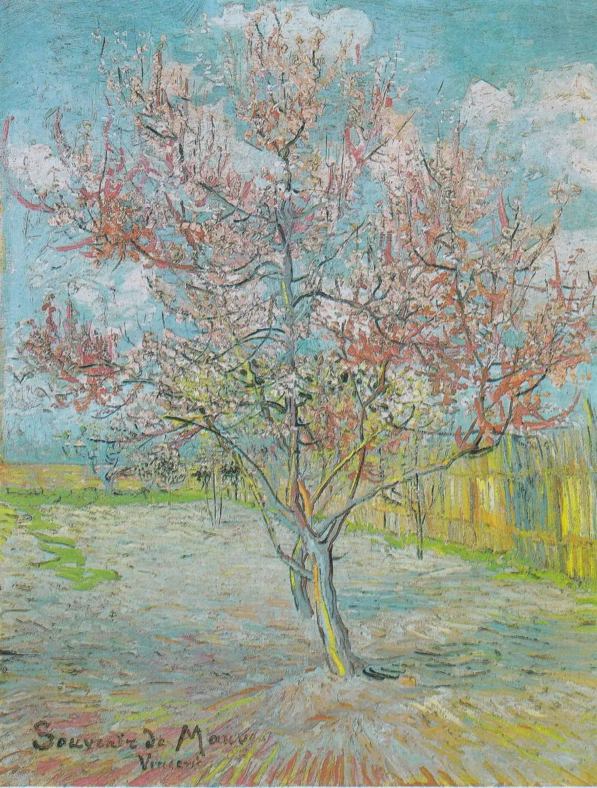

빈센트가 테오에게 · 1888년 3월
빈센트의 편지 · I장 남쪽으로 · Arles

첫 문장 낭독 듣기 (프랑스어)
원문과 번역
J'avais travaillé une toile de 20 en plein air dans un verger, un terrain lilas labouré, une clôture en roseaux, deux pêchers roses contre un ciel glorieux bleu et blanc. Probablement le meilleur paysage que j'aie fait.
과수원에 나가서 20호 캔버스를 하나 그렸어. 갈아 놓은 연보라 땅, 갈대 울타리, 그리고 눈부신 파랑과 흰빛 하늘을 배경으로 선 분홍 복숭아나무 두 그루. 아마 내가 그린 풍경화 중에 제일 좋을 거야.
Seulement un je ne sais quoi m'a empoigné et serré la gorge d'émotion, et j'ai écrit sur mon tableau: Souvenir de Mauve, Vincent & Théo.
그런데 뭐라 말할 수 없는 무언가가 나를 붙잡고 목이 메게 했어. 그래서 그림에 이렇게 썼어. ‘Souvenir de Mauve(마우버를 추억하며), Vincent & Théo’.
J'ai exprès pris la meilleure étude que j'ai fabriquée ici; … il me semblait qu'il fallait en mémoire de Mauve quelque chose et de tendre et de très gai, et non pas une étude dans une gamme plus sérieuse que cela.
일부러 여기서 그린 것 중 제일 좋은 습작을 골랐어. 마우버를 기리려면 다정하면서도 아주 밝은 게 있어야 할 것 같았거든. 그보다 무거운 색조의 습작 말고.
„Ne crois pas que les morts soient morts, Tant qu'il y aura des vivants, Les morts vivront, les morts vivront.” C'est comme ça que je sens la chose, pas plus triste que cela.
“죽은 이들이 죽었다고 생각하지 마. 산 사람이 있는 한, 죽은 이들은 살아 있을 거야, 살아 있을 거야.” 나는 이 일을 그렇게 느껴. 그보다 더 슬프게는 아니야.
J'ai beaucoup de mal en peignant à cause du vent, mais j'attache mon chevalet à des piquets plantés dans le terrain, et travaille quand même, c'est trop beau.
바람 때문에 그리기가 정말 힘들어. 그래도 땅에 말뚝을 박고 이젤을 묶어 둔 채 어떻게든 그려. 너무 아름다우니까.
편지에서 고른 문장들입니다. 번역은 언어 미술관이 새로 썼습니다.
안톤 마우버는 헤이그 시절 빈센트에게 그림을 가르쳐 준 네덜란드 화가로, 1888년 2월에 세상을 떠났어요. 빈센트는 막 그린 이 과수원 그림에 ‘Souvenir de Mauve’라고 써서, 테오와 함께 마우버 부인에게 보내자고 해요. 캔버스 왼쪽 아래에 ‘Souvenir de Mauve’와 ‘Vincent’ 서명이 보여요. 편지는 복숭아나무 두 그루를 말하지만, 그림에서 눈에 띄는 건 앞쪽의 한 그루예요.
앱에서는 이 편지가 메신저처럼 한 줄씩 도착하고, 낱말마다 뜻이 함께 나와요. 편지 속 인물과 짧게 말해 보는 회화도 있어요. I장은 무료예요.
출처
- 그림: Vincent van Gogh · Le Pêcher rose (Souvenir de Mauve) · mars 1888 · Kröller-Müller Museum, Otterlo · Public domain · Public domain (PD-Art) · 원본
- 편지 원문: Brieven 1914, n° 472 · Brieven aan zijn broeder (J. van Gogh-Bonger, 1914), deel III, brief 472 · public domain · archive.org
- 낭독 음성: Supertonic 3 (Supertone Inc.) 로 만들었습니다 (모델 라이선스 OpenRAIL-M).
- 모든 출처: 언어 미술관 출처와 라이선스